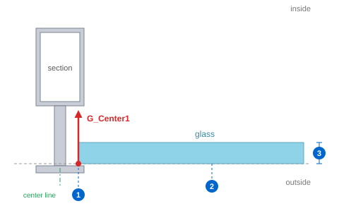
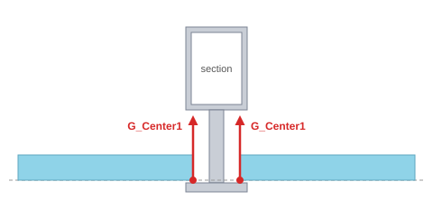
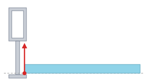
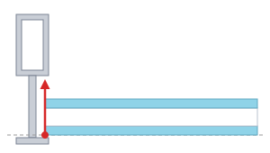
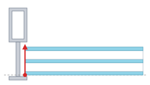

To make glass by the Section method, the section group that holds the glass must contain a line on the G_Center1 layer. The line sets the side edge of the glass (how far the glass goes into the member). The thickness of the glass is set by the glass type in GsOpt, not by the line.
G_Center1 line in the section → SSP (register sections) → GsOpt (glass type settings) → GMD (glass face) → GS1 to GS9 → GsNo → GsList → GsTable → GsFd
| No. | What is set | Where it is set |
|---|---|---|
| ① | Side edge of the glass | The position of the G_Center1 line in the section. The glass ends at the distance of the line from the center line of the member. |
| ② | Outer face of the glass | The wireframe face (the glass face made by GMD). In the section this is the start point of the center line (Center1). |
| ③ | Thickness of the glass | The glass type in GsOpt (the sum of the panes and spacers). The glass is made inward from the outer face by this thickness. |
| Item | Description |
|---|---|
| Layer | It must be on the G_Center1 layer. The GC1 command creates this layer. |
| Section group | Put the line in the group of that section. Lines outside the group are not read. |
| Position | Draw it where the glass ends, inside the glass pocket. Its distance from the center line of the member is the position of the glass edge. |
| Direction and length | Draw it straight, perpendicular to the glass face, long enough to pass through the whole glass thickness from the outer face of the glass. |
| One line per bay | When glass goes into the bays on both sides of a member, draw two lines, one for each bay (one on each side of the center line). A transom also gets one line for the bay above and one for the bay below. |
| Register sections | Run SSP again after adding or changing the line. |

| Case | Result |
|---|---|
| One line on the bay side | The glass ends at that line. |
| No line on the bay side | The glass of that bay cannot be made. The command line says which line (layer) has no strip on the bay side. Check which side of the center line the line is drawn on in the section. |
| Two or more lines on the bay side | The line nearest the center line is used, and the command line reports the number of lines and their distances. Keeping one line per side is recommended. |
From the same line, the thickness and makeup of the glass follow the glass type set in GsOpt. The bottom of each picture is the outside.



| Item | Description |
|---|---|
| Thickness and makeup | Set by the 1st, 2nd and 3rd Pane and the spacer thickness in GsOpt. The glass in the model is one solid of the total thickness; the panes appear in the glass fabrication drawing (GsFd). |
| Position of the outer face | It follows the wireframe face. It does not depend on the start point of the line. |
| Type number | Types 1 to 9 in GsOpt correspond to the commands GS1 to GS9. |
| Command | Description |
|---|---|
| GC1 | Creates the G_Center1 layer. |
| SSP | Register sections — run it after adding the line. |
| GsOpt | Glass type option — sets the thickness and makeup. |
| GMD | Glass face — makes a face in each bay of the wireframe. |
| GS1 to GS9 | Glass modeling — pick glass faces and make the glass (Section method). |